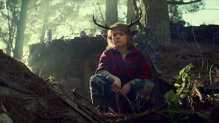
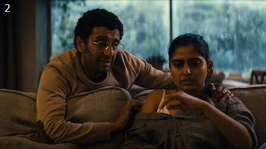
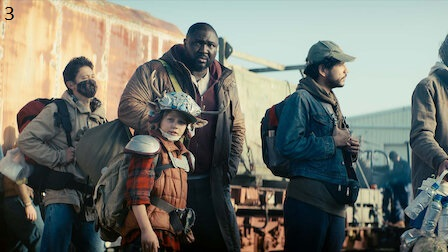
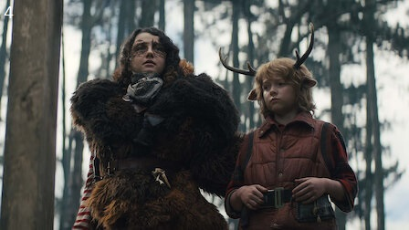
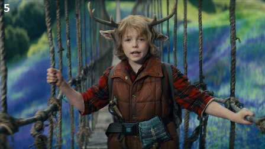
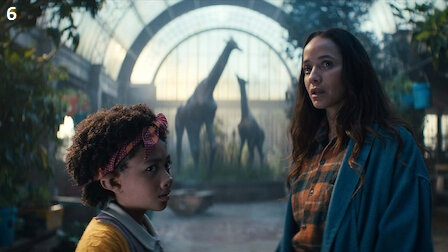
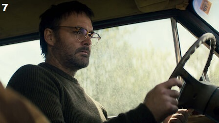
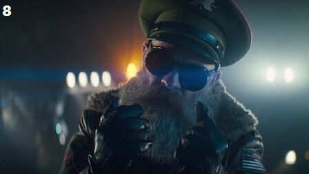

|  |
Saindo da mata |
40-50 minutos |
Criado pelo pai em uma cabana no meio da floresta, Gus aprende a sobreviver e a enfrentar os perigos do mundo lá fora. |
|  |
Foi mal por todos os mortos |
40-50 minutos |
Gus segue Grandão rumo ao desconhecido. Dr. Singh descobre o que precisa fazer para salvar Rani. Aimee encontra um novo sentido para a vida. |
|  |
Esquisitice de cervo |
40-50 minutos |
Ansioso para ver Gus seguir o próprio caminho, Grandão encontra uma maneira de escondê-lo em plena luz do dia. Os Singh vão a uma festa que termina em tragédia. |
|  |
O molho secreto |
40-50 minutos |
Gus faz novos amigos, e Grandão tem que enfrentar o passado. Dr. Singh teme que uma vizinha intrometida revele o segredo de Rani. |
|  |
O que tem no freezer? |
40-50 minutos |
Gus e Grandão arrumam uma companheira de viagem que sugere um atalho perigoso. O santuário de Aimee é ameaçado. O tempo está se esgotando para os Singh. |
|  |
Algo estranho no trem |
40-50 minutos |
Dr. Singh faz uma promessa em um momento de desespero. Um objeto perdido leva a uma viagem turbulenta até o Colorado. Os Últimos Homens se aproximam da Reserva. |
|  |
Quando eles se conheceram |
40-50 minutos |
A busca de Gus para encontrar Birdie e descobrir mais sobre o que a une ao pai dele o enche de dúvidas. |
|  |
Grandão |
40-50 minutos |
Abalado, Gus foge e toma uma decisão precipitada. Grandão enfrenta os erros do passado. Aimee trava uma última batalha contra o General Abbot. |